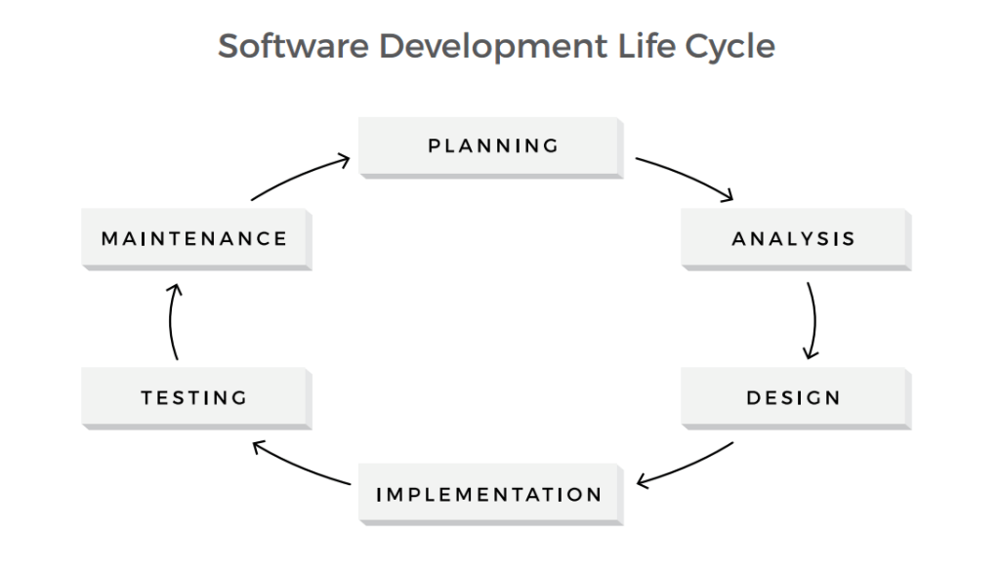
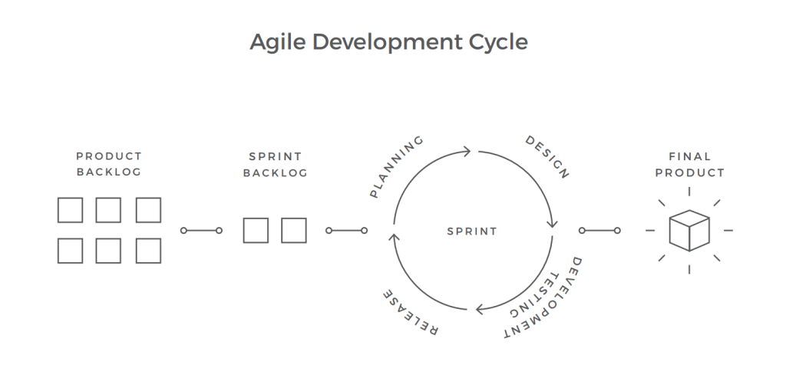
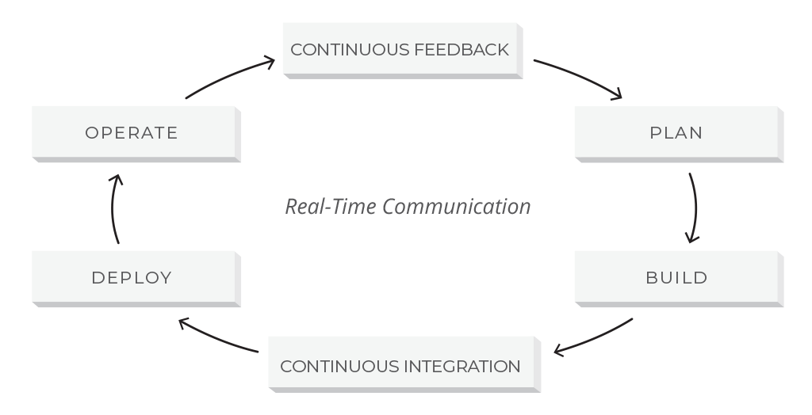

"When you buy a pear, you can instantly evaluate its quality: the size and shape, ripeness, the absence of visible bruising. But only as you take the first bite, will you be able to see if the pear is really that good. Even an extremely good-looking pear might taste sour or have a worm in it."
The same applies to almost any product, be it a physical object or a piece of software. A website you find on the Internet might seem fine at first, but as you scroll down, go to another page, or try to send a contact request, it can start showing some design flaws and errors.
This makes quality control so important in every field, where an end-user product is created. Yet, a sour pear won’t cause as much damage as a self-driving car with poor quality autopilot software. A single error in an EHR system might put a patient’s life at risk, while an eCommerce website that has performance issues might cost the owner millions of dollars in revenue.
Here we will share our insights on the quality assurance and testing process, our best practices and preferred strategies.
In order to make sure the released software is safe and functions as expected, the concept of software quality was introduced. It is often defined as “the degree of conformance to explicit or implicit requirements and expectations”. These so-called explicit and implicit expectations correspond to the two basic levels of software quality:
The structural quality of the software is usually hard to manage: It relies mostly on the expertise of the engineering team and can be assured through code review, analysis and refactoring. At the same time, functional aspect can be assured through a set of dedicated quality management activities, which includes quality assurance, quality control, and testing.
Often used interchangeably, the three terms refer to slightly different aspects of software quality management. Despite a common goal of delivering a product of the best possible quality, both structurally and functionally, they use different approaches to this task.
Quality Assurance is a broad term, explained on the Google Testing Blog as “the continuous and consistent improvement and maintenance of process that enables the QC job”. As follows from the definition, QA focuses more on organizational aspects of quality management, monitoring the consistency of the production process.
Through Quality Control the team verifies the product’s compliance with the functional requirements. As defined by Investopedia, it is a “process through which a business seeks to ensure that product quality is maintained or improved and manufacturing errors are reduced or eliminated”. This activity is applied to the finished product and performed before the product release. In terms of manufacturing industry, it is similar to pulling a random item from an assembly line to see if it complies with the technical specs.
Testing is the basic activity aimed at detecting and solving technical issues in the software source code and assessing the overall product usability, performance, security, and compatibility. It has a very narrow focus and is performed by the test engineers in parallel with the development process or at the dedicated testing stage (depending on the methodological approach to the software development cycle).
| QA | QC | Testing | |
|---|---|---|---|
| Purpose | Setting up adequate process, introducing the standarts of quality to prevent the errors and flaws in the product | Making sure that the product corresponds to the requirements and specs before it is released | Detecting and solving software errors and flaws |
| Focus | Processes | Product as a whole | Source code and design |
| What | Prevention | Verification | Detection |
| Who | The team including the stakeholders | The team | Test engineers Developers |
| When | Throughout the process | Before the release | At the testing stage or along the development process |
If applied to the process of car manufacturing, having a proper quality assurance process means that every team member understands the requirements and performs his/her work according to the commonly accepted guidelines. Namely, it is used to make sure that every single action is performed in the right order, every detail is properly implemented and the overall processes are consistent so that nothing can cause a negative impact on the end product.
Quality control can be compared to having a senior manager walk into a production department and pick a random car for an examination and test drive. Testing activities, in this case, refer to the process of checking every joint, every mechanism separately, as well as the whole product, whether manually or automatically, conducting crash tests, performance tests, and actual or simulated test drives.
Due to its hands-on approach, software testing activities remain a subject of heated discussion. That is why we will focus primarily on this aspect of software quality management in this paper. But before we get into the details, let’s define the main principles of software testing.
Formulated over the past 40 years, the seven principles of software testing represent the ground rules for the process. These are:
Some sources note other principles in addition to the basic ones:
Representing a traditional software development life cycle, the Waterfall model includes 6 consecutive phases: planning, analysis, design, implementation, testing, and maintenance.
In the testing phase a product, already designed and coded, is being thoroughly tested before the release. However, the practice shows that software errors and defects detected at this stage might be too expensive to fix, as the cost of an error tends to increase throughout the software development process.
For example, if there is an error in the specifications, detecting it early in the planning stage wouldn’t cause significant losses to your business. However, the damage grows exponentially throughout the further stages of the process. If such an error is detected at the design stage, you will need to rework your designs to fix it. But if you aren’t able to detect the mistake before the product is built, you might need to make some major changes to the design as well as the source code. This will require a significant amount of effort and investment.
The same is the case for errors produced in the process of implementation. If a feature has a flaw in its logic, building more functionality on top of it might cause a serious damage in the long run. Therefore, it is better to test every feature while the product is still being built. This is where iterative Agile methods prove beneficial.
Being an integral part of the software development process, Agile breaks the development process into smaller parts, iterations, and sprints. This allows testers to work in parallel with the rest of the team throughout the process and fix the flaws and errors immediately after they occur.
The main purpose of such process is to deliver new software features fast and with the best quality. Therefore, this approach is less cost-intensive: Fixing the errors early in the development process, before more problems snowball, is significantly cheaper and requires less effort. Moreover, efficient communication within the team and active involvement of the stakeholders speeds up the process and allows for better-informed decisions. You can find out more about roles and responsibilities in a testing team in our dedicated article.
For those who have Agile experience, DevOps gradually becomes a common practice. This new software development methodology requires a high level of coordination between various functions of the deliverable chain, namely development, QA, and operations.
DevOps is often referred to as an extension of Agile that bridges the gap between development along with QA and operations. However, unlike Agile, DevOps includes the concept of continuous development where the code, written and committed to version control, will be built, deployed, tested and installed in the production environment that is ready to be consumed by the end-user. DevOps places a great emphasis on automation and continuous integration tools that allow for the high-velocity delivery of applications and services.
The fact that testing takes place at each stage in the DevOps model changes the role of testers and the overall idea of testing. Therefore, to be able to effectively carry out testing activities, testers are now expected to have technical skills and even be code savvy.
According to the PractiTest survey, the Agile trend is an undisputed leader, while almost 90 percent of respondents work at least in some Agile projects within their organizations. That said, a third of the respondents is still applying the Waterfall model in some projects, following a steady decrease in the use of that method. DevOps keeps growing, just slower than before.
Organizing a software testing process can be quite challenging. We at AltexSoft follow the three major steps in the software testing process: planning, execution, and reporting.
| TEST PLANNING | TEST EXECUTION | TEST REPORTING | |
|---|---|---|---|
| Activity | Software requirements and design review, strategy and plan development | Designing the tests, setting up the testing environment, executing the test cases | Writing reports and documenting the testing results |
| Deliverables | Test Strategy Test Plan Test Estimation |
Test Cases/Scripts Test Environment Test Results |
Test Results Test/Defect Metrics Test/Closure Report |
While a test strategy is a high-level document, test plan has a more hands-on approach, describing in detail what to test, how to test, when to test and who will do the test. Unlike the static strategy document, that refers to a project as a whole, test plan covers every testing phase separately and is frequently updated by the project manager throughout the process.
According to the IEEE standard for software test documentation, a test plan document should contain the following information:
Writing a plan, which includes all of the listed information, is a time-consuming task. In agile methodologies, with their focus on the product instead of documents, such a waste of time seems insufficient.
As a starting point for the test execution, we need to define what is subject to testing. In order to answer this question, QA teams develop test cases. In a nutshell, a test case describes the preconditions, desired outcomes, and postconditions of a specific test scenario, aimed at verifying that a feature meets the basic requirements.
The next step in test execution is setting up the testing environment. The main criteria for this part are to make sure that the testing environment is as close to the end user’s actual environment (hardware and software) as possible. For example, a typical test environment for a web application should include Web Server, database, OS, and browser.
The software testing process identifies two broad categories: static testing and dynamic testing.
Static testing initially examines the source code and software project documents to catch and prevent defects early in the software testing life cycle. Also called non-execution technique or verification testing, static testing could be performed as inspections, informal and technical reviews, or reviews during walkthrough meetings. Informal review is a cheap testing variant that a QA analyst can conduct anytime during the project. Inspection, also called a formal review, is planned and controlled by the moderator. During the review meeting, errors found by QA analysts are discussed and documented in the review report.
As soon as the primary preparations are finished, the team proceeds with dynamic testing where software is tested during execution. This whitepaper has the most focus on the dynamic testing process as a practical and most commonly used way to validate code behavior. Dynamic testing can be described by methods, levels, and types of underlying QA activities. Let’s have a closer look at this segment of the dynamic testing process.
Software testing methods are the ways the tests are conducted. They include black box testing, white box testing, grey box testing, and ad hoc testing.
Software testing levels describe stages of software development when testing is conducted. That said, there are four progressive testing levels based on the area they focus on the software development process: unit testing, integration testing, system testing, and user acceptance testing (UAT).
Software testing types are the approaches and techniques that are applied at a given level using an appropriate method to address the test requirements in the most efficient manner. They are vast in number while serving different objectives.
To sum up, you can do use case testing (a type) during system or acceptance testing (a level) using black box testing (a method).
As there is no perfect software, the testing is never 100 percent complete. It is an ongoing process. However, there exist the so-called “exit criteria”, which define whether there was “enough testing” conducted, based on the risk assessment of the project.
There are common points that are present mostly in exit criteria:
As soon as all of these criteria (or any custom criteria that you have set in your project) are met, the testing comes to its closure.
The testing logs and status reports are documented throughout the process of the test execution. Every issue found in the product should be reported and handled accordingly. The test summary and test closure reports are prepared and provided to the stakeholders. The team holds a retrospective meeting in order to define and document the issues that occurred during the development and improve the process.
A piece of software is more than several lines of code. It is usually a multilayer, complex system, incorporating dozens of separate functional components and third-party integrations. Therefore, efficient software testing should go far beyond just finding errors in the source code. Typically, the testing covers the following levels of software.
The smallest testable part of the software system is often referred to as a unit. Therefore, this testing level is aimed at examining every single unit of a software system in order to make sure that it meets the original requirements and functions as expected. Unit testing is commonly performed early in the development process by the engineers themselves, not the testing team.
The objective of the next testing level is to verify whether the combined units work well together as a group. Integration testing is aimed at detecting the flaws in the interactions between the units within a module. There are two main approaches to this testing: bottom-up and top-down methods. The bottom-up integration testing starts with unit tests, successively increasing the complexity of the software modules under test. The top-down method takes the opposite approach, focusing on high-level combinations first and examining the simple ones later.
At this level, a complete software system is tested as a whole. This stage serves to verify the product’s compliance with the functional and technical requirements and overall quality standards. System testing should be performed by a highly professional testing team in an environment as close to the real business use scenario as possible.
This is the last stage of the testing process, where the product is validated against the end user requirements and for accuracy. This final step helps the team decide if the product is ready to be shipped or not. While small issues should be detected and resolved earlier in the process, this testing level focuses on overall system quality, from content and UI to performance issues. The acceptance stage might be followed by an alpha and beta testing, allowing a small number of actual users to try out the software before it is officially released.
| Unit testing | Integration | System | Acceptance | |
|---|---|---|---|---|
| Why | To ensure code is developed correctly | To make sure the ties between the system components function as required | To ensure the whole system works well when integrated | To ensure customers and end user expectations are met |
| Who | Developers / Technical Architects | Developers / Technical Architects | SDET / Manual QA / Business Analyst / Product Owner | Developer / SDET / Product Owner / Product End User |
| What | All new code + refactoring of legasy code as well as Javascript unit Testing | New web services, components, controllers, etc. | Scenario Testing, User flows and typical User Journeys, Performance and Security testin | Verifying acceptance tests on the stories, verification of features |
| When | As soon as new code is written | As soon as new components are added | When the product is complete | When the product is ready to be shipped |
| Where | Local Dev + Continuous Integration (CI as a part of the build) | Local Dev + CI (part of the build) | Staging Environment | CI / Test Environment |
In Agile software development, the testing typically represents an iterative process. While the levels generally refer to the complete product, they can also be applied to every added feature. In this case, every small unit of the new functionality is being verified. Then the engineers check the interconnections between these units, the way the feature integrates with the rest of the system and if the new update is ready to be shipped.
This method gets its name because a QA engineer focuses on the inputs and the expected outputs without knowing how the application works internally and how these inputs are processed. The purpose of this method is to check the functionality of the software making sure that it works correctly and meets user demands. This method can be applied to any testing level but is used mostly for system and user acceptance testing.
Unlike black box testing, this method requires profound knowledge of the code as it entails testing of some structural part of the application. Therefore, generally, the developers directly involved in writing code are responsible for this type of testing. The purpose of white box testing is to enhance security, the flow of inputs/outputs through the application, and to improve design and usability. This method is mainly used at the unit and integration testing levels.
This method is a combination of the previous two, since it involves testing of both functional and structural parts of the application. Using this method, an experienced tester has partial knowledge of the internal application structure and based on this knowledge can design test cases while still testing from the black-box perspective. This method is mostly applicable to the integration testing level.
This is an informal testing method as it’s performed without planning and documentation. Conducting tests informally and randomly without any formal, expected results, the tester improvises the steps and arbitrarily executes them. Though defects found with this method are more difficult to reproduce given the absence of written test cases, this approach helps find important defects quickly, something which cannot be done with formal methods.
Based on the main objective of the process, testing can be of different types.
Based on the main objective of the process, testing can be of different types. Here are the most popular testing types according to the ISTQB survey.
| Testing Type | Object | Method Used | Levels os Testing |
|---|---|---|---|
| Functional Testing | Testing software functions | Black Box | User acceptance system |
| Performance Testing | Testing responsiveness and stability of the system performance under a certain load | Black Box | Any level |
| Use Case Testing | Checking that the path used by the user is working as intended | Black Box | User acceptance System Integration |
| Exploratory Testing | Validating user experience | Ad Hoc | User Acceptance System |
| Usability Testing | Checking that the system is easy to use | Black Box | User Acceptance System |
| Security Testing | Protecting the system | White Box | System |
Winning 83% of the respondents’ votes, functional testing is the most important testing type. This is to be expected, since without functionality there would be no use of all other non-functional aspects of the system.
In functional testing, the system is tested against the functional requirements by feeding it input and examining the output. This type of testing applies the black box method. Consequently, it gives significance not to the processing itself, but rather, on its results. Functional testing is usually performed within the levels of system and acceptance.
Typically, the process of functional testing comprises the following set of actions:
Performance testing has been selected by 60.7 percent of respondents as the most important non-functional testing type. Performance testing is aimed at investigating the responsiveness and stability of the system performance under a certain load.
Depending on the workload, a system behavior is evaluated by different kinds of performance testing:
It’s the most widely used testing technique, followed by exploratory testing. Use case describes how a system will respond to a given scenario created by the user. It is user-oriented and focuses on the actions and the actor, not taking into account the system input and output. Keeping the project concepts in mind, developers write use cases and after completing them, the behavior of the system is tested accordingly. Testers, in their turn, use them to create test cases.
Use case testing is applied widely in developing tests at system or acceptance levels. It also helps uncover the defects in integration testing. Use case testing checks whether the path used by the user is working as intended and makes sure the tasks can be accomplished successfully. Applying use case testing, analysts can detect shortcomings and modify the system so that it attains efficiency and accuracy.
The exploratory testing technique was first described by Cem Kaner, a software engineering professor and consumer advocate, as “a style of software testing that emphasizes the personal freedom and responsibility of the individual tester to continually optimize the value of her work by treating test-related learning, test design, test execution, and test result interpretation as mutually supportive activities that run in parallel throughout the project.”
Using the ad hoc method, exploratory testing does not rely on predefined and documented test cases and test steps as most testing types do. Instead, it is an interactive and free-form process, with the main focus on validating user experience, not code. It has much in common with the ad hoc or intuitive testing but is more systematic. Applying exploratory testing, skilled testers can provide valuable and auditable results.
Chosen by 44.1% of respondents, usability testing is performed from the end user’s perspective to see if the system is easy to use. This testing type is not to be confused with user acceptance testing. The latter verifies that the final product meets the set requirements; the former ensures that the implementation approach will work for the user.
Regression testing is the practice of verifying software behavior after updates to ensure that the changes haven’t impacted existing system functions, stability, and overall integrity. Regression testing can be applied to all levels and with all types of testing procedures but the most common way is to run regression testing according to use cases. Regression quality assurance workflow can be automated to avoid repetitive manual tests after each update. There are multiple regression testing techniques: